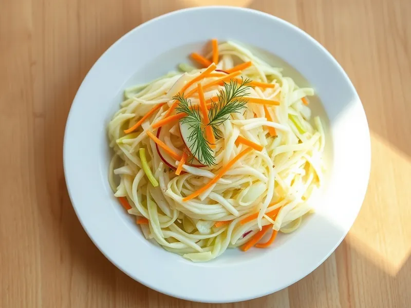

Салат «Витаминный» из капусты с морковью и яблоком
Хрустящая капуста с морковью и яблоком под заправкой из масла, уксуса и сахара, как в столовой
20 мин4 порц.141 ккал на порциюБ 3 · Ж 8 · У 14Русская кухня
Открыть в приложении: порции, таймеры, список покупок
Продукты на 4 порц.
- Капуста белокочанная500 г
- Морковь1 шт
- Яблоки1 шт
- Уксус 9%1 ст. л.
- Сахар2 ч. л.
- Растительное масло2 ст. л.
- Соль1 ч. л.
- Укроп по желаниюпо вкусу
Как готовить
- Нашинкуйте капусту как можно тоньше, посыпьте солью и сахаром.
- Перетрите капусту руками 1-2 минуты, пока она не даст сок и не станет мягче.
- Морковь натрите на крупной тёрке, яблоко очистите от сердцевины и нарежьте тонкой соломкой.
- Соедините всё, добавьте уксус и масло, перемешайте и дайте постоять 10 минут.
- Перед подачей посыпьте рубленым укропом.
Совет. Капусту мните только с солью и сахаром, без масла, иначе сок не выделится. В холодильнике салат хранится сутки и становится только вкуснее.